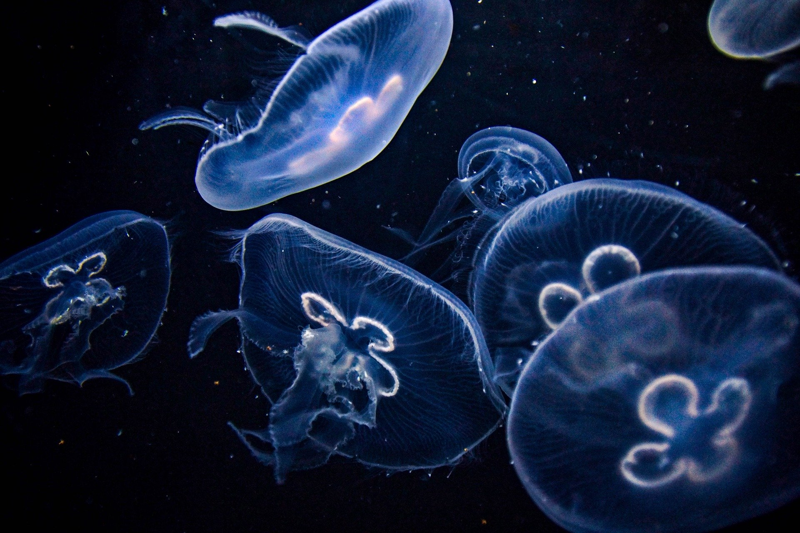

Ubur-Ubur, Hewan Laut yang Unik
Jumat, 25 September 2026
Ubur-ubur adalah salah satu hewan laut yang memiliki bentuk tubuh unik dan menarik. Tubuhnya yang transparan serta tentakel yang bergerak mengikuti arus membuat ubur-ubur terlihat seperti menari di dalam air.
Ubur-ubur termasuk hewan yang sederhana karena tidak memiliki tulang, otak, maupun jantung seperti manusia. Tubuhnya sebagian besar terdiri dari air dan memiliki bentuk seperti payung.
Tentakel ubur-ubur digunakan untuk menangkap makanan dan melindungi dirinya. Beberapa jenis ubur-ubur memiliki sel penyengat yang dapat digunakan untuk melumpuhkan mangsanya.
Walaupun terlihat lembut dan sederhana, ubur-ubur tetap menjadi bagian penting dalam ekosistem laut. Keberadaannya membantu menjaga keseimbangan kehidupan di dalam laut.
